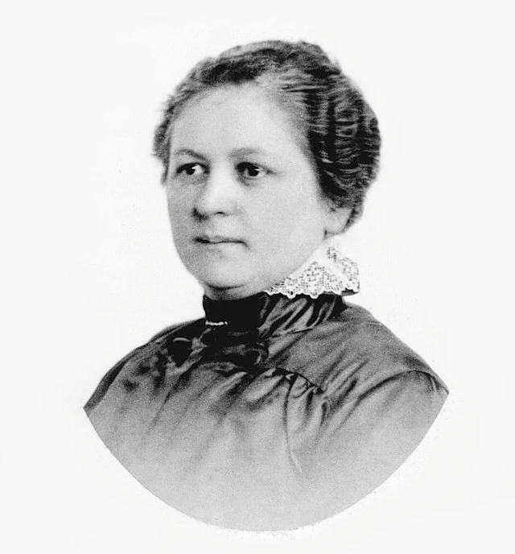

Marie Curie
Física e Química
Desenvolveu pesquisas fundamentais sobre radioatividade e contribuiu para importantes avanços científicos e médicos.
Conhecer trajetóriaMulheres que transformaram o mundo
Descubra histórias de mulheres que desafiaram limites, fizeram grandes descobertas e transformaram a ciência.
Explorar cientistasO projeto Elas na Ciência tem como objetivo apresentar mulheres que tiveram grande importância no desenvolvimento científico e tecnológico.
Ao longo da história, diversas mulheres contribuíram para áreas como física, química, medicina, computação, biologia, matemática e engenharia.
Muitas dessas contribuições estão presentes até hoje em tecnologias, medicamentos, pesquisas e objetos que fazem parte do nosso cotidiano.
Conheça algumas das cientistas que ajudaram a transformar nossa compreensão sobre o mundo.
Física e Química
Desenvolveu pesquisas fundamentais sobre radioatividade e contribuiu para importantes avanços científicos e médicos.
Conhecer trajetória
Matemática e Computação
Desenvolveu um dos primeiros algoritmos destinados a serem executados por uma máquina.
Conhecer trajetória
Matemática e Física
Realizou cálculos importantes para missões espaciais da NASA durante o início da exploração espacial.
Conhecer trajetória
Química e Biologia
Produziu dados fundamentais que ajudaram na compreensão da estrutura do DNA.
Conhecer trajetóriaMuitas mulheres também contribuíram com invenções e tecnologias que fazem parte da nossa rotina até hoje.

Tecnologia e Engenharia
Desenvolveu, junto com George Antheil, um sistema de comunicação por salto de frequência.
Essa ideia contribuiu para a evolução das comunicações sem fio.

Invenção e Transporte
Criou um mecanismo precursor do limpador de para-brisa, aumentando a segurança e a visibilidade dos motoristas.

Inovação Doméstica
Desenvolveu o filtro de café de papel, utilizado até hoje em milhões de casas.

Química
Desenvolveu o Kevlar, material extremamente resistente utilizado em equipamentos de proteção, pneus, cabos e diversos produtos.
Ao longo dos séculos, mulheres contribuíram para diferentes áreas do conhecimento.
Publicou notas sobre a Máquina Analítica, incluindo um algoritmo destinado a ser processado pela máquina.
Marie e Pierre Curie anunciaram a descoberta dos elementos polônio e rádio.
Produziu imagens de difração de raios X fundamentais para compreender a estrutura do DNA.
Seus cálculos foram importantes para a missão orbital de John Glenn ao redor da Terra.
Teste seus conhecimentos sobre mulheres que fizeram história na ciência.
Começar Quiz